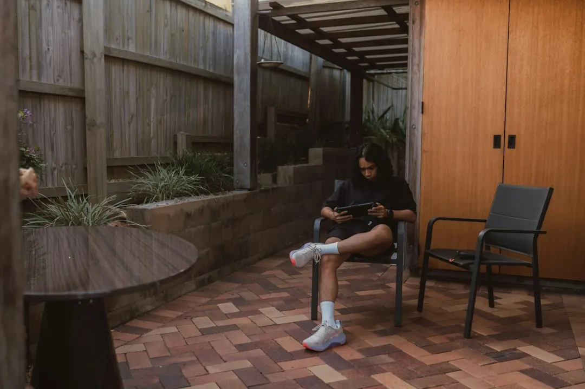

A suitable retaining wall depends on the ground being held, the level change, access, drainage and anything above the wall. Boulder, sandstone, concrete sleeper and timber sleeper systems suit different project discussions. Replacement work may include removal, disposal, drainage and garden repairs. Brisbane City Council approval exemptions depend on more than height, so a licensed building certifier should check the complete proposal where approval is uncertain.
For homeowners comparing retaining walls brisbane options, the practical decision is how the wall will manage the ground, water, access and the way the garden needs to be used.
Retaining Walls Brisbane Explained
The published guidance from Boulder Walls Brisbane starts with the purpose of the work: creating a level lawn, raising a garden bed, replacing an old wall or making a sloping yard more usable. Write that purpose down before choosing a finish. A wall beside a path, planted garden or driveway may need a different discussion from a simple garden edge.
Begin with the height change, the higher ground being retained and anything above it, such as a driveway or another structure. Approximate dimensions help describe the job, but they do not replace a site assessment. Include the suburb, how the work area is reached and whether an existing wall is leaning, damaged or due for removal.
- Describe the result you want, such as a new level or replacement.
- Show the full work area, not only a close view of the wall face.
- Note planting, fences, paths and lawn that should remain.
Compare wall systems by site fit
Natural boulders create an irregular, planted garden appearance and leave room for larger stones. Sandstone blocks provide either even rows or a rougher stone finish, depending on the design. Concrete sleepers sit between posts, while timber sleepers create a different garden edge that needs its ground, drainage and future care considered.
The visible face is only one part of the proposal. For sleeper systems, ask how posts, connections and drainage suit the site. For stone work, discuss the available room, the way stones will be placed and how water behind the wall will be managed. Compare construction method, access, surrounding garden work and ongoing care, rather than appearance alone.
Drainage, access and surrounding work
Water behind a wall needs to be addressed in the design. The wall system, ground and lawful outlet all affect the drainage discussion. Pooling, staining and soil loss are useful observations to report when requesting an assessment. Gaps between stones alone do not prove that drainage is adequate.
Access can change the practical scope even when the street looks wide. Steps, narrow gates, turns and overhead obstructions may affect how materials reach the work area. Wider photographs showing the route from the street to the wall are more informative than close images of the face. Ask whether paths need protection and whether repairs after construction are included.
For a replacement, removal and disposal of the old wall may be a substantial part of the work. If the existing structure is leaning, photographs can begin the discussion, but they cannot show buried footings or drainage. Ask how removal and any temporary support will be handled before accepting a proposal.
Approval questions before construction
Brisbane City Council identifies conditions for work that may not need building approval, but height is not the only consideration. Loads above the wall, nearby buildings or walls and pool fencing can also affect the assessment. A licensed building certifier should check the complete proposal before anyone treats it as exempt.
Ask who is responsible for design, approval, construction and any necessary inspections. Keep the answer with the written proposal, including the wall system, drainage, access arrangements, removal work and repairs to nearby garden elements. If the site includes a driveway, another structure or a pool fence, identify that early because it may change the approval conversation.
A consistent brief makes proposals easier to compare. Give each provider the same information about levels, access, drainage and surrounding work, then check which questions remain unresolved.
What to include in a quote request
A useful enquiry does not require a final material choice. State whether the project is a new level, a replacement, a terraced garden or another use of the yard. Add the approximate height change, wall length if known, access from the street, nearby structures and anything you want protected.
Ask for design, site assessment, drainage, construction, removal, disposal and garden reinstatement to be identified separately where they apply. Confirm the proposed material, inclusions, exclusions, price and expected start arrangements in writing. Availability, assessment arrangements and a quote remain matters to confirm for the individual job.
For a related guide in this local information series, see the retaining wall project overview. Keep the final decision tied to the actual ground, access route and intended garden use.
- Describe the result. Explain whether you need a new level, a replacement wall, a terraced garden or another practical use of the yard.
- Show the whole site. Provide wider photographs and approximate dimensions, including the route from the street to the work area.
- Discuss workable options. Ask how material, access, drainage and any site assessment affect the proposed construction method.
- Confirm the proposal. Check the inclusions, exclusions, responsibilities, price and expected start arrangements in writing.
| Topic | Evidence to provide | Decision to confirm |
|---|---|---|
| Ground and levels | Approximate height change, higher ground and anything above | Whether a site assessment is needed |
| Water | Pooling, staining, soil loss and possible outlet | What drainage is included |
| Access | Street route, gates, steps, turns and obstructions | How materials will reach the work area |
| Existing work | Photos of the old wall and nearby garden elements | Removal, disposal and reinstatement scope |
Common questions
Does a retaining wall always need building approval in Brisbane? Not always. Brisbane City Council lists conditions for work that may not need approval, but height is only one factor. Loads above the wall, nearby buildings or walls and pool fencing can also matter, so a licensed building certifier should check the full proposal.
What should drainage questions cover? Ask how water behind the wall will be managed, where it can lawfully discharge and what the quote includes. Report pooling, staining or soil loss, and do not assume gaps between stones prove the drainage is adequate.
Can an existing wall be assessed from photographs? Photos are useful for starting a discussion, but they cannot show buried footings or drainage. A suitably qualified professional can assess what remains hidden and explain whether removal or rebuilding needs to be considered.
What makes a quote easier to compare? Give each provider the same information about levels, access, surrounding structures, drainage, materials and existing walls. Ask for design, construction, removal, disposal, protection and repairs to be identified as inclusions or exclusions.
This guide covers material choice, site information, drainage, access, approval questions and quote preparation for garden retaining wall projects in Brisbane.